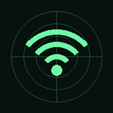

IP Scanner
Публичный IP, провайдер и приблизительное местоположение. Запрос передаётся ipapi.co; GPS не используется.

Радар — визуализация, не поиск сетей Wi-Fi.
Статус браузера не доказывает доступ в интернет. iOS не предоставляет веб-приложению SSID, сигнал, тип шифрования и список точек доступа.
Отметь то, что проверил в настройках роутера.
Введи пароль для локальной оценки.
Эвристика, не гарантия стойкости. Сам пароль не сохраняется и не отправляется.
Случайные символы Web Crypto. Пароль существует только в памяти страницы.
Демонстрация идеи перебора на игрушечном трёхзначном коде, который случайно создаёт само приложение. Не подключается к сетям и не принимает внешний пароль.
Готово к запуску.
Чем длиннее и непредсказуемее пароль, тем сложнее его угадать. Скорость этой анимации не отражает скорость атаки на Wi-Fi.
Публичный IP, провайдер и приблизительное местоположение. Запрос передаётся ipapi.co; GPS не используется.
Запрос передаёт указанный IP в ipapi.co.
IP-геолокация приблизительная и может показывать узел провайдера или VPN. Карта загружается только по кнопке.
Тест через Cloudflare: до 10 МБ полезных данных за запуск без учёта служебного трафика.
Зелёная — загрузка; голубая — отправка. Мбит/с.
Код создаётся локально, содержит пароль в открытом виде. Делись только с доверенными людьми. Совместимость WPA3-only и корпоративных сетей не гарантируется.
Ручной аудит своего роутера, не автоматическое сканирование.
Проверка Cloudflare каждые 15 секунд после ответа, пока этот раздел открыт и приложение видно.
Отсутствие ответа тестового сервера не всегда означает обрыв Wi-Fi.
Хранение только на устройстве. Пароли не записываются. iOS может удалить локальные данные.